A 45-year-old female with recent anterior cervical discectomy and fusion from C1-C4 one month ago presents with neck pain. An MRI of the cervical spine (not shown below) without contrast reveals a retropharyngeal fluid collection, raising the possibility of an abscess. A dual isotope gallium-67/T99m-MDP scan is ordered and is shown below, with the top images representing the gallium scan, and the bottom images representing the T99m-MDP scan. Which of the following is the diagnosis?
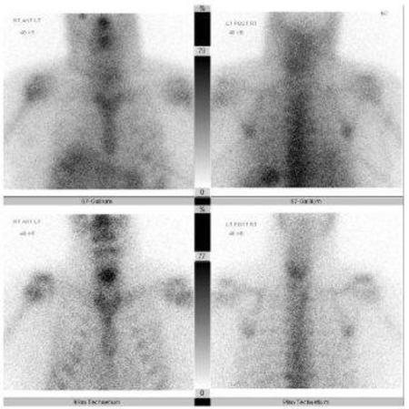
ARetropharyngeal abscess(11%)
BEquivocal scan(10%)
COsteomyelitis discitis(29%)
DDegenerative changes(50%)
Your answerC
Correct answerD. Degenerative changes
Vital Concept
When bone scan shows greater uptake than Gallium-67 in the same region, degenerative disk disease is favored as this denotes prominent osteoblastic activity without significant inflammation. Conversely, when Gallium-67 uptake exceeds or extends beyond bone scan uptake, osteomyelitis due to inflammatory lactoferrin binding at infection sites is favored.
Explanation
Degenerative changes
Imaging of bones with T99m-MDP for signs of infection has shown a 50% to 70% sensitivity in detecting bone pathology, with a negative scan being highly sensitive for no acute bone issue being present. In order to improve sensitivity when there is increased uptake, complimentary imaging, in this case gallium 67, is used. Gallium 67 is a transferrin/ lactoferrin binding radiopharmaceutical, both of which are increased at sites of inflammation/ infection. In cases where a gallium scan is negative, this is highly suggestive of no active infection or inflammation occurring in the region of concern. In cases where the gallium uptake is greater than the uptake seen with T99m-MDP, or it is not concordant with the uptake seen on the T99m-MDP portion (i.e., there is uptake on the gallium portion not seen on the T99m portion), this is consistent with an area of active infection. In cases where there is concordant and equal uptake, the study is equivocal. Finally, in cases where there is concordant uptake (same anatomic location demonstrates uptake) with increased uptake on the T99m portion, this is consistent with degenerative changes. Here, there is concordant uptake with greater uptake seen on the T99m portion, consistent with degenerative changes.
Incorrect Answers:
A. Gallium and T99m-MDP are complimentary radiopharmaceuticals, both of which are taken up by bone. In this case, the dual isotope scan reveals increased concordant uptake in the neck on the T99m portion, excluding the possibility of infection.
B. Equivocal imaging would occur if the intensity of uptake for both gallium and T99m-MDP were equal, with the uptake remaining concordant. In this case, the uptake on the T99m portion is greater than the gallium portion.
C. Similarly to the answer for (A), the increased uptake on the T99m portion excludes infection as a possibility for the uptake in the neck.
Vital Concept: When bone scan shows greater uptake than Gallium-67 in the same region, degenerative disk disease is favored as this denotes prominent osteoblastic activity without significant inflammation. Conversely, when Gallium-67 uptake exceeds or extends beyond bone scan uptake, osteomyelitis due to inflammatory lactoferrin binding at infection sites is favored.
Q2
easy QID 39327
Correct
Prior to giving a speech about a new radioactive tracer, a radiologist discloses their financial affiliation with the company that makes the tracer. Which of the following professional responsibilities is the radiologist most likely exemplifying?
ACommitment to a just distribution of finite resources(0%)
BCommitment to improving access to care(0%)
CCommitment to maintaining trust by managing conflicts of interest(99%)
DCommitment to professional responsibilities(1%)
ECommitment to scientific knowledge(0%)
Your answerC
Correct answerC. Commitment to maintaining trust by managing conflicts of interest
Explanation
Commitment to maintaining trust by managing conflicts of interest
The radiologist’s disclosure of their financial affiliation with the company signifies managing conflicts of interest. Physicians must take care to avoid exposing themselves and their patients to situations that unnecessarily compromise patient care for personal gain. Physicians have a professional and ethical obligation to publicly disclose conflicts of interest that arise over the course of their professional careers.
Incorrect Answers:
A. Ensuring a just distribution of finite resources is a key professional responsibility. Physicians should practice medicine that is based on wise and cost-effective management of limited clinical resources. This involves avoiding unnecessary tests and procedures that would otherwise expose patients to avoidable harm and expenses.
B. Improving access to care is a key professional responsibility. Physicians should be dedicated to making uniform and quality health care available by eliminating access barriers based on education, laws, finances, geography, or social discrimination. Improving access to care also involves health advocacy and the promotion of public health.
D. Commitment to the medical profession is a key professional responsibility. Physicians should commit themselves to collaborating with other health care professionals in order to maximize patient care, participate in self-regulation of the profession, and create and implement standards that will be followed by current and future members of the profession.
E. Scientific knowledge is a key professional responsibility. Physicians must adhere to and practice scientific standards in their medical practice, in addition to promoting research and discovering new knowledge that can be beneficially employed by members of the profession. Physicians must protect the integrity of scientific knowledge with scientific evidence and medical experience.
Q3
QID 3069
Correct
This male patient reported pain of the left scrotum, and sonography of the left scrotum was done (see images below.) Which of the following statements is correct?
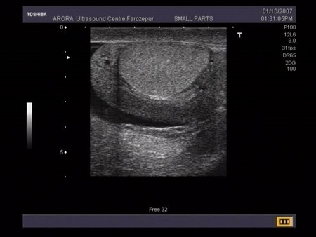
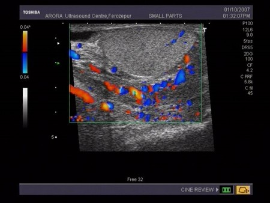
ALeft orchitis(1%)
BLeft epididymitis(88%)
CLeft epididymo-orchitis(2%)
DNormal study(1%)
ELeft varicocele(9%)
Your answerB
Correct answerB. Left epididymitis
Vital Concept
Epididymitis refers to inflammation of the epididymis. Ultrasound features include increased vascularity on color Doppler studies.
Explanation
Left epididymitis
Sonographic evaluation demonstrates diffuse enlargement of the left epididymis with increased color Doppler flow and possible associated trace hydrocele; these findings are compatible with epididymitis. The left testicle is grossly unremarkable with no abnormal color Doppler flow within it; there is no evidence of associated orchitis.
Incorrect Answers:
A. C. The left testis itself appears normal, suggesting that the infection has not spread to the testis.
D. E. The left epididymis appears swollen and edematous, with increased vascularity on color Doppler study. No dilatation of the pampiniform plexus of vein exists.
Vital Concept: Epididymitis refers to inflammation of the epididymis. Ultrasound features include increased vascularity on color Doppler studies.
Q4
hard QID 63867
Incorrect
What is the condition shown on this mid-second-trimester ultrasound?
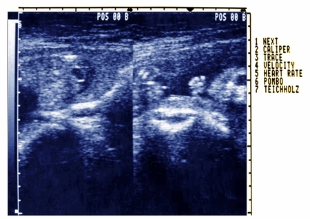
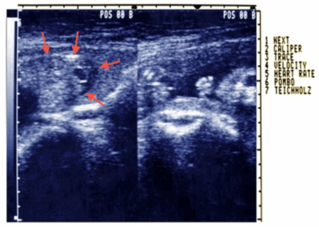
AGastroschisis(21%)
BOmphalocele(62%)
CPhysiological midgut herniation(14%)
DEctopia cordis(3%)
Your answerC
Correct answerB. Omphalocele
Explanation
Omphalocele
This herniation is arising from the midline abdominal wall with circumscribed/contained appearance of the herniated structures (red arrows). A thin echogenic membrane surrounds the herniated structures, most apparent where the membrane is perpendicular to the ultrasound beam. These findings are compatible with omphalocele.
Incorrect Answers:
A. Gastroschisis is herniation of peritoneal contents from a defect in the abdominal wall, most commonly on the right. In contrast to omphalocele, the herniated structures are free-floating in the amniotic fluid (non-contained). This is most commonly a sporadic occurrence and usually seen in isolation, whereas omphalocele usually occurs in the setting of other congenital anomalies.
C. Physiological midgut herniation occurs at this location but returns to the abdominal cavity by 12 weeks; this fetus is beyond 12 weeks and the amount of contents outside the abdominal cavity is much larger than the physiological herniation.
D. Ectopia cordis is where some or all the heart is located outside the chest.
Q5
hard QID 5045
Incorrect
Which of the following is the most common adverse event related to MRI scanning reported to the FDA?
AHearing damage(9%)
BSkin burns(70%)
CProjectile injury(2%)
DContrast reaction(13%)
EPacemaker lead heating(5%)
Your answerD
Correct answerB. Skin burns
Vital Concept
Per the FDA, thermal injuries are the most reported MRI adverse event.
Explanation
Skin burns
Up to 60% of adverse events reported to the FDA from MRI are skin burns related to surface coils or heating of non-MR-compatible EKG leads, pulse oximeters, etc.
Incorrect Answers:
A. Hearing damage is rarely seen due to routinely used hearing protection.
C. Projectile injuries receive a lot of press and can be very dangerous but are quite uncommon.
D. Contrast reaction to gadolinium-based agents is also extremely rare.
E. Patients are aggressively screened for the presence of a pacemaker or abandoned leads, making this a very rare occurrence. Newer MRI-compatible devices are shielded from RF energy and should not heat if working properly.
Vital Concept: Per the FDA, thermal injuries are the most reported MRI adverse event.
Q6
moderate QID 18107
Correct
A 53-year-old male patient presents with acute onset of shortness of breath and tachycardia. If the chest radiograph is clear, which of the following is the probability of acute pulmonary embolism in this patient?
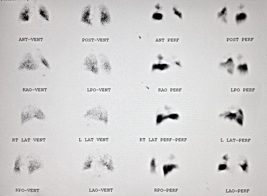
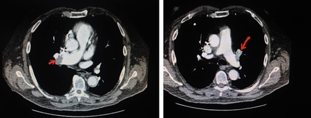
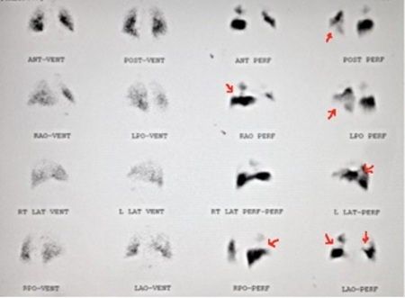
ANormal(0%)
BVery low probability(8%)
CHigh probability(87%)
DNon-diagnostic(5%)
Your answerC
Correct answerC. High probability
Explanation
High probability
According to the Modified PIOPED II criteria, high probability of PE is associated with ≥ 2 large mismatched V/Q segmental defects or segmental equivalent defects are present.
One segmental equivalent means a defect of more than 75% of a segment, and half segmental equivalent means a defect of 25 to 75%
One segmental equivalent means a defect of more than 75% of a segment, and half segmental equivalent means a defect of 25 to 75%
Classifies V/Q scan as non-diagnostic, normal, very low probability, and high probability.
Another major criteria used for classifying a PE is with PISAPED (the prospective investigative study of acute pulmonary embolism diagnosis)
Incorrect Answers:
A. There is a high probability of acute pulmonary embolism.
B. According to the Modified PIOPED II criteria, very low probability of PE is associated with non-segmental perfusion defects, ≥ 2 matched defects with normal chest x-ray, 1 to 3 small defects, Q defects < chest X-ray lesion and a solitary matched defect in mid or upper lung, solitary large pleural effusion.
D. According to the Modified PIOPED II criteria, there is no more intermediate probability of PE category in the new modified PIOPED II. This has been replaced by non-diagnostic and includes all other findings that don’t meet the criteria for normal, very low, or high probability.
Q7
hard QID 44012
Correct
Which of the following is correct regarding the lesions seen below?
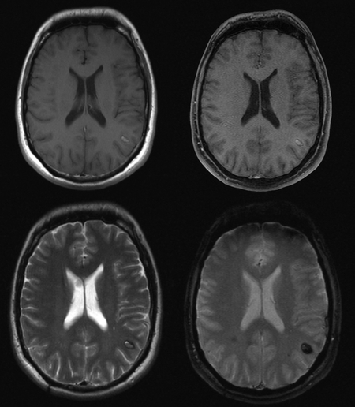
AThe MR imaging appearance is primarily due to acute hemorrhage(4%)
BThey are frequently symptomatic because of their propensity to bleed(9%)
CMultifocal lesions are common, and seen in the majority of patients(6%)
DSmall lesions are difficult to see on non-contrast CT(78%)
EHistologically normal brain tissue is present within this lesion(4%)
Your answerD
Correct answerD. Small lesions are difficult to see on non-contrast CT
Vital Concept
Small cavernous malformations appear as tiny punctate hypointense foci best seen on gradient echo or susceptibility-weighted imaging, with characteristic "blooming" artifacts from hemosiderin that overestimate actual lesion size.
Explanation
Small lesions are difficult to see on non-contrast CT
The T2 and gradient-echo sequences (bottom two images) demonstrate a mass with a surrounding low signal rim that blooms on the gradient echo sequence. This is the characteristic appearance of a cavernous malformation. The MR imaging appearance again is primarily due to hemorrhage of varying states, not acute hemorrhage. Unless large, these lesions may be difficult to see on CT. When appreciable and/or if there has been a recent bleed, they appear as a region of hyperdensity with surrounding edema and without enhancement. Most patients who present symptomatically do so at 40 to 60 years of age. T1 pre and post contrast images (top two images) show minimal, if any, enhancement.
Incorrect Answers:
A. The MR imaging appearance again is primarily due to hemorrhage of varying states, not acute hemorrhage.
B. The risk of hemorrhage is overall very low, 1% per year for familial cases, and somewhat less for sporadic lesions. Thus, the majority of lesions are found incidentally.
C. Most patients have single lesions, however, multiple lesions may be seen in familial cases (multiple cavernous malformation syndrome), and screening of family members may be indicated.
E. Cavernous malformations are essentially a hamartoma of immature vascular channels and are themselves benign in nature. Histologically they are composed of a mulberry-like cluster of dilated thin-walled capillaries, with surrounding hemosiderin. In contrast to arteriovascular malformation, there is no normal brain between the interstices of these lesions.
Vital Concept: Small cavernous malformations appear as tiny punctate hypointense foci best seen on gradient echo or susceptibility-weighted imaging, with characteristic "blooming" artifacts from hemosiderin that overestimate actual lesion size.
Q8
QID 43671
Correct
What is the diagnosis in this patient with fever, edema, and erythema of the left eye?
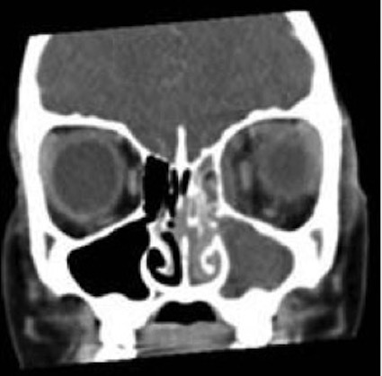
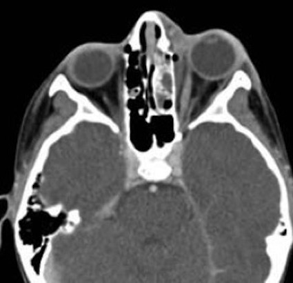
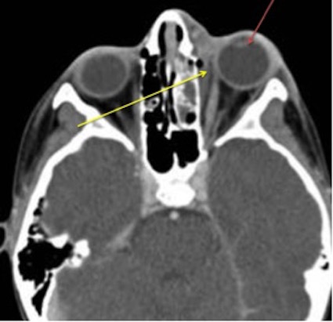
AInflammatory pseudotumor(2%)
BOrbital lymphoma(0%)
CPreseptal cellulitis(12%)
DOrbital cellulitis(85%)
ESarcoidosis(0%)
Your answerD
Correct answerD. Orbital cellulitis
Explanation
Orbital cellulitis
The images show proptosis of the left globe (red arrow) as well as thickening and edema of periorbital soft tissues and a subperiosteal abscess extending posterior to the septum (yellow arrow). These findings, along with the clinical history, are diagnostic of orbital cellulitis.
It is important to differentiate between preseptal and postseptal cellulitis, as there are distinct therapeutic and prognostic implications. Preseptal cellulitis is limited to the soft tissues anterior to the orbital septum. It is often managed with oral antibiotics alone. Postseptal cellulitis (more commonly now referred to os 'orbital cellulitis') extends posterior to the orbital septum. It is a more serious condition, requiring hospitalization and parenteral antibiotics. Complications include meningitis, intraorbital abscess, and epidural abscess formation, which require surgical intervention.
Incorrect Answers:
A. Orbital pseudotumor is an idiopathic inflammatory condition that usually involves the extraocular muscles, although in some cases there is involvement of the uvea, sclera, lacrimal gland, and retrobulbar soft tissues.
B. Orbital lymphoma is typically seen in patients between 50 and 70 years of age. It usually appears as a soft tissue mass, either involving the conjunctiva or elsewhere in the orbit, frequently in the upper outer quadrant, closely associated with the lacrimal gland.
C. It is important to differentiate between preseptal and postseptal (orbital) cellulitis, as there are distinct therapeutic and prognostic implications. Preseptal cellulitis is limited to the soft tissues anterior to the orbital septum. It is often managed with oral antibiotics alone.
E. When sarcoidosis involves the orbit, noncaseating granulomatous disease may affect any structure. Most commonly there is multifocal involvement of the lacrimal gland, optic nerve sheath, and extraocular muscles.
Q9
easy QID 37613
Correct
Nephrogenic systemic fibrosis (NSF) primarily involves which of the following organ system?
ASkin and subcutaneous tissues(98%)
BLungs(1%)
CEsophagus(0%)
DHeart(0%)
ESkeletal muscles(1%)
Your answerA
Correct answerA. Skin and subcutaneous tissues
Vital Concept
Nephrogenic systemic fibrosis most commonly involves the skin, but can also affect internal organs such as skeletal muscle, lungs, and heart
Explanation
Skin and subcutaneous tissues
An additional consideration with the use of gadolinium-based contrast media is the risk of nephrogenic systemic fibrosis (NSF). The ACR Manual on Contrast Media defines NSF as “a fibrosing disease, primarily identified in the skin and subcutaneous tissues.”
Incorrect Answers:
B, C, D, and E. In rare cases, it is also known to involve other organs, such as the lungs, esophagus, heart, and skeletal muscles. Initial symptoms typically include skin thickening and/or pruritis. Symptoms and signs may develop and progress rapidly, with some affected patients developing contractures and joint immobility. In some patients, the disease may be fatal.
Vital Concept: Nephrogenic systemic fibrosis most commonly involves the skin, but can also affect internal organs such as skeletal muscle, lungs, and heart
Q10
hard QID 18082
Correct
Which of the following radiation levels is outside of the discrimination range of the gas-filled device depicted below?
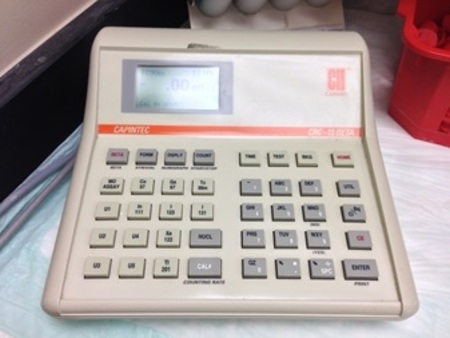
A>10 µCi(9%)
B>10 mCi(7%)
C>100 mCi(16%)
D>10 Ci(67%)
Your answerD
Correct answerD. >10 Ci
Vital Concept
A dose calibrator can detect radiation levels over the range of activities that may be encountered clinically, which is usually 10 μCi (0.37 MBq) to 1–2 Ci (37,000–74,000 MBq).
Explanation
>10 Ci
Incorrect Answers:
A.B.C. Dose calibrators are able to detect radiation levels over 10 μCi.
Vital Concept: A dose calibrator can detect radiation levels over the range of activities that may be encountered clinically, which is usually 10 μCi (0.37 MBq) to 1–2 Ci (37,000–74,000 MBq).
Q11
moderate QID 21575
Correct
A 62-year-old male patient presents with a history of chronic unstable angina and worsening exertional dyspnea. Which of the following is the diagnosis?
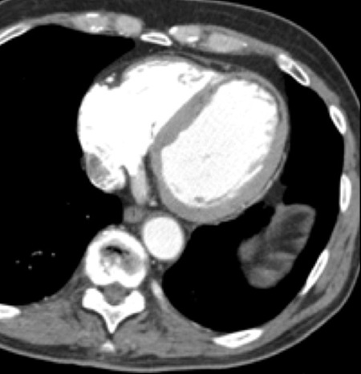
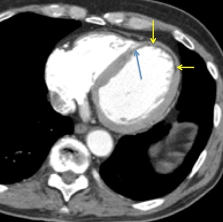
APulmonary embolism(1%)
BChronic left anterior descending artery (LAD) infarction(87%)
CChronic left circumflex artery (LCX) infarction(2%)
DChronic right coronary artery (RCA) infarction(7%)
EConstrictive pericarditis(3%)
Your answerB
Correct answerB. Chronic left anterior descending artery (LAD) infarction
Explanation
Chronic left anterior descending artery (LAD) infarction
The left coronary artery arises from the left coronary cusp of the aorta and then divides into the left anterior, descending artery and left circumflex artery. The left anterior descending artery travels along the anterior interventricular sulcus to supply the left ventricular free wall and gives off diagonal branches to supply a portion of the cardiac apex, as well as septal perforator branches to supply the interventricular septum. In this case, there is marked thinning and fibrofatty replacement of the cardiac apex (yellow arrows) and apical portions of the interventricular septum (blue arrow). This constellation of findings most likely represents chronic infarction of the distal LAD. These patients are at increased risk for development of left ventricular aneurysm at the thinned segment.
Incorrect Answers:
A. Pulmonary embolism may produce relative right ventricular dilatation when it induces right ventricular strain. However, in this case, there are no findings to suggest pulmonary embolism.
C. A chronic LCX infarction would typically produce thinning and fibrofatty replacement of the lateral wall of the left ventricle.
D. Chronic RCA infarction could produce apical myocardial thinning if the infarction is at the level of the posterior descending artery in a right-dominant circulation. However, one might also expect more inferior wall thinning as well.
E. Constrictive pericarditis is an abnormal pericardial thickening with or without pericardial adhesions that results in decreased ventricular filling. Typically, the pericardium is thickened greater than 4 to 6 mm in thickness. On CT, often there is coexistent pericardial calcification. MR imaging may demonstrate marked pericardial thickening and tubular configuration of the ventricles. Often, cine sequences will demonstrate a characteristic diastolic septal bounce. Constrictive pericarditis is differentiated from restrictive cardiomyopathy by the lack of myocardial delayed enhancement in constrictive pericarditis.
Q12
hard QID 20766
Correct
Given the location of the needle (white) in relation to the lesion (yellow) on these post-fire diagrams, what should the provider think of the location of the needle in relation to the lesion on this stereotactic biopsy diagram?
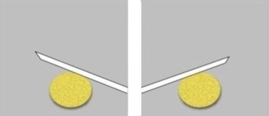
AGood position(1%)
BX-axis error only(4%)
CCombined x-axis and y-axis error(5%)
DY-axis error only(30%)
Your answerD
Correct answerD. Y-axis error only
Vital Concept
A y-axis/vertical error occurs in stereotactic breast biopsy when the needle is above or below the lesion.
Explanation
Y-axis error only
Incorrect Answers:
A. The needle is above the lesion.
B. C. There is no abnormality on the horizontal/ x-axis.
D. The above images demonstrate a y-axis/vertical error with the needle above the lesion.
Vital Concept: A y-axis/vertical error occurs in stereotactic breast biopsy when the needle is above or below the lesion.
Q13
moderate QID 21573
Correct
A 53-year-old male patient presents with exercise-induced chest pain. Which of the following is the diagnosis?
Correct answerA. Right coronary artery (RCA) stenosis
Explanation
Right coronary artery (RCA) stenosis
This is a curved multiplanar reformatted coronary CTA. The right coronary artery (red arrow) arises from the right coronary cusp of the aorta (blue arrow) and descends in a C-shape along the lateral aspect of the right atrium (green arrow). It gives off the sinoatrial nodal branch (in about 60% of patients, 40% arise from the left circumflex) proximally. A high-grade stenosis is seen just beyond this point (yellow arrow). It then descends along the lateral border of the right atrium and then gives off the right marginal artery along the margin of the right ventricle. It then turns posteriorly along the inferior aspect of the right ventricle. In right-dominant circulations (70% of patients, 10% arise from the left circumflex, 20% are co-dominant), the RCA gives off the posterior descending artery (PDA) along the posterior interventricular sulcus, extending to the cardiac apex.
Incorrect Answers:
B. The left coronary artery arises from the left coronary cusp of the aorta and then divides into the left anterior descending artery and left circumflex artery. The left anterior descending artery travels along the anterior interventricular sulcus to supply the left ventricular free wall via diagonal branches and supplies the interventricular septum.
C. The LAD is described above.
D. The PDA is described above.
E. The obtuse marginal artery is a branch of the left circumflex artery extending along the left margin of the heart toward the apex.
Q14
easy QID 20594
Correct
A 36-year-old African American patient has chronic shortness of breath despite asthma treatment. Based on the image, which of the following is the most likely diagnosis?
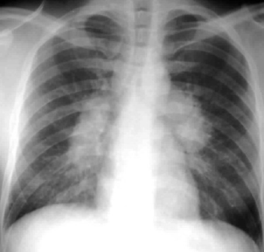
ABronchial carcinoma(0%)
BSarcoidosis(100%)
CCOPD(0%)
DHeart failure(0%)
EAtelectasis(0%)
Your answerB
Correct answerB. Sarcoidosis
Explanation
Sarcoidosis
This is a classic image of sarcoidosis.
Incorrect Answers:
A. The CXR appearance of bronchial carcinoma would likely include a central mass lesion and produce possible radiological signs such as the S-sign of Golden.
C. The CXR appearance of COPD is nonspecific and includes hypervascular markings, hyperinflation of the lungs, and a "barreled chest" appearance on lateral films.
D. Heart failure would have more evidence of cardiomegaly on the plain film.
E. Atelectasis would show an increase in density in the areas of atelectasis, with a potential displacement of the hemidiaphragm and pulmonary vessels.
Q15
QID 57411
Correct
A 5-year-old girl presents with fever and cough of 7 days duration. She is eating and drinking adequately, and her medical history is unremarkable. Vital signs are a temperature of 100°F (37.8°C), a heart rate of 90/min., a respiratory rate of 20/min., and an oxygen saturation of 95% in room air. A CBC shows mild leukocytosis, and a chest x-ray demonstrates a circular airspace opacity in the right mid/lower lung. What is the likely diagnosis?
ALung adenocarcinoma(0%)
BNeuroblastoma(1%)
CLymphoma(0%)
DPneumonia(93%)
ESequestration(5%)
Your answerD
Correct answerD. Pneumonia
Vital Concept
Round pneumonia typically occurs in young children and usually involves the superior segments of the lower lobes. Air bronchograms may be seen within the opacity. The most common causative organism is Streptococcus pneumoniae.
Explanation
Pneumonia
This is a classic presentation of “round pneumonia” in a pediatric patient. Children under age 8 years have not developed collateral pathways for inter-alveolar communication (called pores of Kohn and canals of Lambert). Because adults have these pathways, pneumonia can spread to an entire lobe. In children, however, the spread of infection in the lung is more limited and results in a rounded appearance. The most common etiology of round pneumonia is bacterial, with Streptococcus pneumoniae being the most frequent causative organism. Round pneumonia typically appears as a well-circumscribed, rounded opacity, often with irregular margins. The most common location is in the superior segments of the lower lobes (98%). Air bronchograms help confirm the diagnosis.
Incorrect Answers:
A. Lung adenocarcinoma is extremely rare in this age group.
B. Neuroblastoma does not typically present with a large pulmonary mass. Neuroblastoma is a consideration in this age group, but it typically presents as a mass in the adrenal gland, retroperitoneum, or posterior mediastinum. If lung metastases are present, they usually occur as multiple pulmonary nodules, not as a single large mass.
C. Lymphoma is uncommon in this age group and typically presents with lymphadenopathy or hepatosplenomegaly.
E. Sequestration could present as a rounded opacity if superinfected, but it most commonly occurs at the lung bases.
Vital Concept: Round pneumonia typically occurs in young children and usually involves the superior segments of the lower lobes. Air bronchograms may be seen within the opacity. The most common causative organism is Streptococcus pneumoniae.
Q16
hard QID 56781
Correct
A coronal, T2-weighted, fat-saturated MR image of a patient with prior anterior cruciate ligament graft repair is shown below. What abnormality is evident?
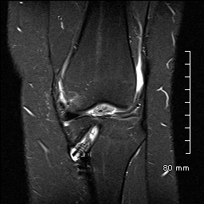
AWidening of tibial tunnel(12%)
BArthrofibrosis(77%)
CACL tear(5%)
DMedial collateral ligament tear(6%)
Your answerB
Correct answerB. Arthrofibrosis
Explanation
Arthrofibrosis
Within the joint space, there is an intermediate signal, ovoid structure at the anterior aspect of the intercondylar notch, most compatible with arthrofibrosis. This is a known complication of anterior cruciate ligament repair.
Incorrect Answers:
A. The visualized portion of the tibial tunnel has a normal appearance, the screw is normally located, and there is no excess fluid signal to suggest widening or loosening.
C. The ACL is not well or adequately demonstrated on this image.
D. The medial collateral ligament has a normal, low-signal, linear morphology. A tear of the medial collateral ligament would result in fluid around the ligament (grade 1), increased signal and thickening of the ligament (grade 2), or frank disruption (grade 3).
Q17
QID 22611
Correct
A 2-year-old male patient undergoes MRI for evaluation of large abdominal circumference. Which of the following is the most likely diagnosis?
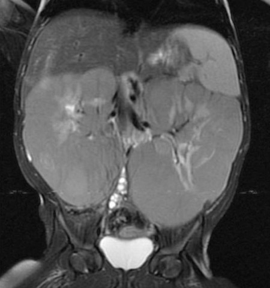
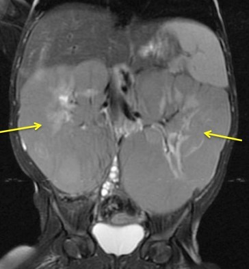
AWilms' tumor(10%)
BNeuroblastoma(1%)
CMesoblastic nephroma(4%)
DNephroblastomatosis(84%)
EMultilocular cystic nephroma(1%)
Your answerD
Correct answerD. Nephroblastomatosis
Explanation
Nephroblastomatosis
Nephroblastomatosis is a form of persistent metanephric blastema in pediatric patients. It is characterized as diffuse nephrogenic rests within the renal parenchyma and is typically seen as a homogeneous rind of renal masses that surround the kidney or are dispersed within the renal parenchyma (yellow arrows). This rind of tissue tends to enhance to a lesser degree than that seen in the remainder of the normal kidney. It is most frequently encountered during the period of infancy and may degenerate into Wilms' tumor. Therefore, regular surveillance for increase in size or the development of heterogeneity is important, as this finding could signal conversion to Wilms' tumor.
Incorrect Answers:
A. Wilms' tumor is a malignant tumor of the primitive metanephric blastema and is the most common abdominal neoplasm in pediatric patients aged 1 to 8 years old, peaking at age 3. It is associated with deletion of a tumor suppressor gene on chromosome 11. They typically appear as large masses with heterogeneous attenuation and signal on T1- and T2-weighted MR imaging. They enhance heterogeneously and typically have well-defined margins. They tend to cause local mass effect and displace adjacent organs and have a characteristic “claw” of contiguous normal renal tissue, indicating their primary location within the kidney. They calcify less frequently than neuroblastomas. They are associated with certain syndromes, such as Beckwith-Wiedemann syndrome, Denys-Drash syndrome, and WAGR (Wilms' tumor, aniridia, genitourinary anomalies, and cognitive impairment). They are treated with a combination of surgical resection, chemotherapy, and radiation.
B. Neuroblastomas are common malignant lesions in the pediatric population and frequently involve the adrenal medulla, retroperitoneum, or mediastinum. They are most commonly encountered in patients less than 2 years old (in contradistinction to Wilms' tumor, which peaks at age 3). Neuroblastomas are heterogeneous in appearance owing to internal hemorrhage and necrosis, with typical internal calcification. They are usually hyperintense on T2-weighted imaging and hypointense on T1-weighted imaging with heterogeneous enhancement. In contradistinction to Wilms' tumor, they tend to engulf adjacent vascular structures rather than exerting mass effect upon them. They frequently metastasize to bone and liver. They may be imaged with Tc99m bone scan and MIBG scintigraphy for evaluation of metastatic extent. Staging of neuroblastoma is unique, and is given as follows:
Stage 1—tumor confined to initial organ
Stage 2—tumor extends beyond organ but not across midline
Stage 3—tumor crosses midline
Stage 4—distant metastasis
Stage 4S—metastasis to skin, liver, and bone marrow in a patient less than one year of age. This is an important distinction to make, as the survival expectancy in this stage is almost 100% and may spontaneously resolve.
C. Mesoblastic nephroma is a typically benign tumor of neonates composed primarily of fibroblasts. It is best characterized as a unilateral intrarenal solid tumor with variable internal cystic necrosis, hemorrhage, and enhancement in a neonatal patient. It may be indistinguishable from Wilms' tumor, but the age of the patient should suggest the diagnosis over Wilms' tumor. They are usually resected surgically, which is typically curative.
E. Multilocular cystic nephroma is a cystic renal mass which, when encountered in the pediatric population, is more common in male patients but is far more common in the female adult population. In the pediatric population it is most common between the ages of 3 months to 2 years. The typical appearance is that of a large multicystic mass with variably enhancing internal septations. They are typically benign masses that are usually treated with surgical resection, which is usually curative. However, the presence of immature elements (metanephric blastema) within the mass can confer the potential for aggressive behavior, leading to a lesion carrying a similar prognosis to that of Wilms' tumor.
Vital Concept
:
Bilateral nephroblastomatosis shows T1 hypointensity and variable T2 intensity relative to normal renal cortex. It presents as peripheral masses (perilobar type) or diffuse nephromegaly maintaining reniform shape (intralobar type).
Q18
QID 22428
Correct
A 53-year-old male patient undergoes the procedure shown. Three days later the patient experiences worsening right upper quadrant pain with right upper quadrant tenderness to palpation and a positive Murphy sign. Which of the following is the most important measure to prevent this complication?
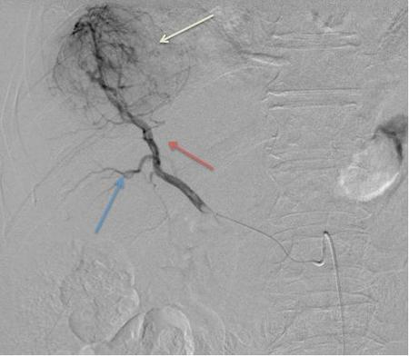
AAggressive intravenous hydration(2%)
BPre-procedure antibiotics(12%)
CCareful catheter positioning and slow infusion of embolic material(82%)
DProper selection of embolic particle size(4%)
EPre-procedure administration of bile salts(1%)
Your answerC
Correct answerC. Careful catheter positioning and slow infusion of embolic material
Vital Concept
Nontarget cystic artery embolization is common during TACE since the cystic artery typically arises from the proximal right hepatic artery. Despite frequent occurrence, clinical complications are rare. Most cases are asymptomatic and rarely require cholecystectomy or other intervention.
Explanation
Careful catheter positioning and slow infusion of embolic material
This hepatic artery angiogram (red arrow) shows a round hypervascular liver mass with tumor blush (green arrow). This patient is undergoing transhepatic arterial chemoembolization (TACE) of a hepatic tumor. Based on clinical and imaging findings, the patient likely has had an inadvertent embolization of the cystic artery (blue arrow). Non-target embolization is one of the most feared complications of chemoembolization procedures. In right hepatic lobe embolizations, care must be taken to position the catheter distal to the origin of the cystic artery with slow, careful administration of embolic material to prevent reflux into the cystic artery. Often, chemical cholecystitis related to non-target embolization during (TACE) can be treated conservatively without need for cholecystectomy or cholecystostomy.
Incorrect Answers:
A. Aggressive hydration may be useful in post-procedure care, especially in the setting of cholecystitis. However, care must be taken to avoid fluid overload in cirrhotic patients.
B. Pre-procedure antibiotic administration is important for the prevention of infection or hepatic abscess after embolization but will not have any effect on non-target embolization.
D. Careful selection of embolic particles of the appropriate diameter may help to prevent tissue infarction in normal tissues. If the chosen particles are small enough to enter distal small vessels within the vascular bed, there is increased risk for tissue infarction.
E. The patient has a chemical cholecystitis related to non-target administration of chemotherapeutic agent to the cystic artery. While this can be exacerbated by the presence of gallstones, there is no evidence to support pre-procedure medical gallstone reduction.
Vital Concept: Nontarget cystic artery embolization is common during TACE since the cystic artery typically arises from the proximal right hepatic artery. Despite frequent occurrence, clinical complications are rare. Most cases are asymptomatic and rarely require cholecystectomy or other intervention.
Q19
hard QID 4992
Incorrect
A 44-year-old male with a history of lymphoma has the following CT. Which of the following is the most likely diagnosis?
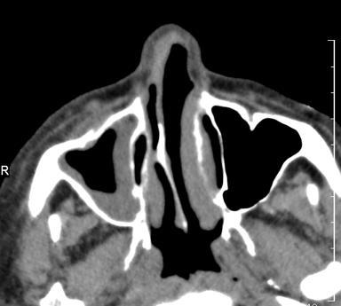
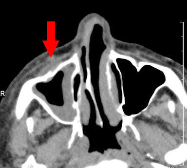
AExtranodal lymphoma(5%)
BAllergic fungal sinusitis(14%)
CAcute bacterial sinusitis(21%)
DInvasive fungal sinusitis(59%)
EInverting papilloma(1%)
Your answerB
Correct answerD. Invasive fungal sinusitis
Explanation
Invasive fungal sinusitis
The maxillofacial CT shows right maxillary sinus disease with clear obliteration of the anterior periantral fat plane of the right maxillary sinus. This is very worrisome for invasive fungal sinusitis in an immunocompromised patient. The fat plane obliteration is highly suggestive of an aggressive process and is not typical for allergic fungal sinusitis or uncomplicated bacterial sinusitis. This is also not the appearance of an inverting papilloma.
Q20
hard QID 5108
Correct
The following ultrasound image of a fetus who is 20 weeks gestational age was obtained during a routine anatomy screening ultrasound in a 20-year-old woman with no relevant history. There were no other suspicious findings detected on ultrasound. How should the parents be counseled regarding the finding?
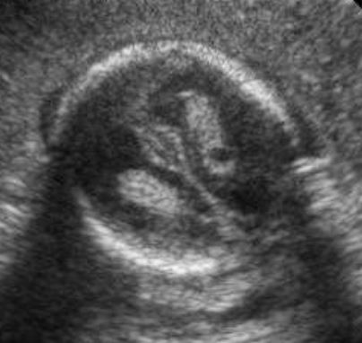
AReassurance that this is typically incidental and of no significance(74%)
BSurveillance imaging is needed until the end of pregnancy(9%)
CThe child will likely need a surgical procedure shortly after birth(2%)
DRefer to genetic counseling and consideration for amniocentesis(13%)
EThe child will likely have at least some degree of intellectual disability(2%)
Your answerA
Correct answerA. Reassurance that this is typically incidental and of no significance
Vital Concept
A small choroid plexus cyst can be seen in up to 4% of normal pregnancies and typically resolve by 32 weeks, rarely leading adverse outcomes.
Explanation
Reassurance that this is typically incidental and of no significance
The ultrasound through the level of the ventricles shows a small choroid plexus cyst. These can be seen in up to 4% of normal pregnancies and typically resolve by 32 weeks. There is an increased incidence in patients with aneuploidy, most commonly trisomy 18, but most patients have no chromosomal defect and will have no adverse outcome. If the patient is high risk, such as advanced maternal age, she may be considered for further screening. Otherwise, the patient should be reassured that this is most commonly incidental and further testing or follow-up is more likely to be harmful than helpful.
Incorrect Answers:
B. Surveillance imaging is not needed because this is typically incidental and of no significance.
C. The child will not likely need a surgical procedure because this small choroid plexus cyst typically resolves by 32 weeks.
D. Most patients with this have no chromosomal defect and do not need to be referred to genetic counseling.
E. A small choroid plexus cyst typically resolves by 32 weeks and will have no adverse outcome, such as intellectual disability.
Vital Concept: A small choroid plexus cyst can be seen in up to 4% of normal pregnancies and typically resolve by 32 weeks, rarely leading adverse outcomes.
Q21
moderate QID 22598
Correct
A 2-month-old male patient presents with increasing head circumference and worsening heart failure. Which of the following is the most likely diagnosis?
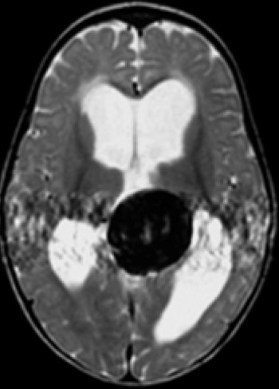
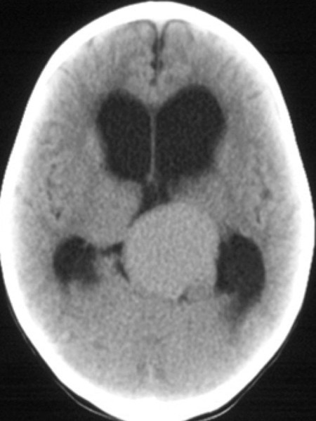
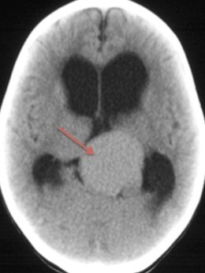
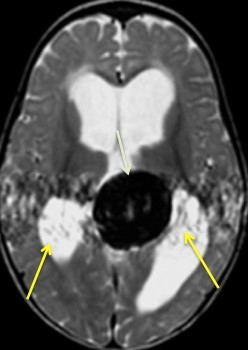
ACraniopharyngioma(2%)
BPineocytoma(4%)
CRetinoblastoma(1%)
DGerminoma(4%)
EVein of Galen malformation(89%)
Your answerE
Correct answerE. Vein of Galen malformation
Vital Concept
Vein of Galen malformation appears as enlarged median prosencephalic vein dorsal to the tectum. It shows flow voids on MRI and iso/hyperattenuation on CT. MR angiography demonstrates arterial anatomy and fistula site. Associated hydrocephalus and cardiac failure are common in neonates.
Explanation
Vein of Galen malformation
Vein of Galen (VOG) malformation is an abnormal arteriovenous fistula between choroidal arteries and the median prosencephalic vein of Markowski (MPV), a venous precursor to the vein of Galen. The result is abnormal dilatation of the MPV with a large midline varix at the level of the quadrigeminal plate cistern.
It is a common cause of neonatal high-output heart failure. On CT imaging, look for a large iso-to-hyperdense lesion in the quadrigeminal plate cistern (red arrow), which markedly enhances on post-contrast imaging. On MRI, look for a large, prominent flow void (dark signal seen on this axial T2WI – green arrow) in this location with adjacent pulsation artifact (yellow arrows) and marked enhancement on postcontrast sequences.
There are two types: choroidal and mural. Choroidal type malformations are characterized by the presence of multiple feeder arteries from choroidal, pericallosal, and thalamoperforators. Mural type malformations typically have feeders from only one source. Vein of Galen malformations are typically treated via endovascular techniques, often with coil embolization.
Incorrect Answers:
A. Craniopharyngiomas are benign WHO grade I tumors arising in the sellar region from remnants of Rathke's pouch epithelium. They are typically large, lobular lesions with internal cystic components and prominent calcifications. The cysts are of variable signal intensity on T1- and T2-weighted imaging, depending on their contents. They typically have marked enhancement, especially at the cyst walls.
There are two types: adamantinomatous and papillary. Adamantinomatous type is most common in pediatric populations and demonstrates the typical solid/cystic appearance with internal calcification and hemorrhage. Papillary type is more common in adults and is typically solid with infrequent calcification.
B. Pineocytomas are parenchymal tumors of the pineal gland, composed of mature cells resembling pineocytes. They typically appear as a well-defined pineal mass with “exploded” pineal calcifications rather than the “engulfed” pineal calcifications seen in germinomas. They may have internal enhancement as well as cystic components. They are not often invasive but tend to cause symptoms related to compression, with compression of the cerebral aqueduct producing hydrocephalus and headache, as well as Parinaud syndrome (paralysis of upward gaze) related to compression of the tectum. Though they may occur at any age, they are more common in patients of middle age.
C. Retinoblastoma is a malignant tumor of the neuroectodermal cells, most commonly affecting the retina, but which may also be seen in midline intracranial structures such as the pineal gland (trilateral retinoblastoma) or suprasellar region. They most frequently appear as calcified intraocular masses with heterogeneous enhancement.
D. Germinoma is a common midline lesion arising in the pineal gland and suprasellar regions. They tend to present with endocrinopathies when in the suprasellar location, while pineal region masses tend to produce obstructive hydrocephalus and Parinaud syndrome by tectal compression. They tend to be well-circumscribed, hyperdense to brain parenchyma, with prominent enhancement on post-contrast imaging.
On MRI, they tend to be iso- or hyperintense to grey matter on T1- and T2-weighted imaging. They may contain internal T2 hyperintense cystic/ necrotic foci. One characteristic finding of pineal germinomas is that they tend to “engulf” pineal calcifications, while pineoblastomas and pineocytomas tend to “explode” pineal calcifications.
Vital Concept: Vein of Galen malformation appears as enlarged median prosencephalic vein dorsal to the tectum. It shows flow voids on MRI and iso/hyperattenuation on CT. MR angiography demonstrates arterial anatomy and fistula site. Associated hydrocephalus and cardiac failure are common in neonates.
Q22
QID 22427
Correct
A 70-year-old male found down is found to be bacteremic on initial work up. A pulsatile groin mass palpated on physical exam. Ultrasound is obtained. Which of the following is most likely?
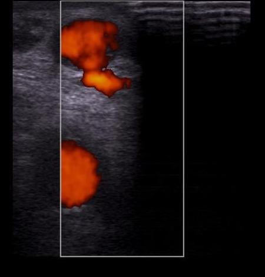
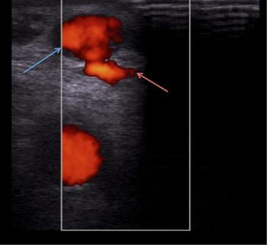
AVascular soft tissue mass(6%)
BFusiform aneurysm(2%)
CPseudoanerusym at the junction of native vessel and synthetic graft(2%)
DMycotic aneurysm(66%)
Your answerD
Correct answerD. Mycotic aneurysm
Vital Concept
Mycotic aneurysms are usually a complication of the hematogenous spread of bacterial infection.
Explanation
Mycotic aneurysm
Mycotic aneurysms are aneurysms arising from infection of the arterial wall. They are usually bacterial in origin, a complication of the hematogenous spread of bacterial infection, classically from the heart, commonly associated with IV drug misuse.
The color Doppler ultrasound of the thigh shown in the stem reveals a vascular outpouching (blue arrow), which represents a pseudoaneurysm adjacent to the femoral artery (red arrow).
Incorrect Answers:
A. This is more characteristic of a vascular lesion, especially given clinical context.
B. Fusiform dilatation of the vessel would appear as diffuse increase in diameter of the affected vessel. This is not seen here.
C. There is no graft material specifically shown here.
Vital Concept: Mycotic aneurysms are usually a complication of the hematogenous spread of bacterial infection.
Q23
easy QID 18087
Correct
A 64-year-old female patient presents with a 40-pack-year history of smoking and worsening shortness of breath. Which of the following is the most likely cause of this finding?
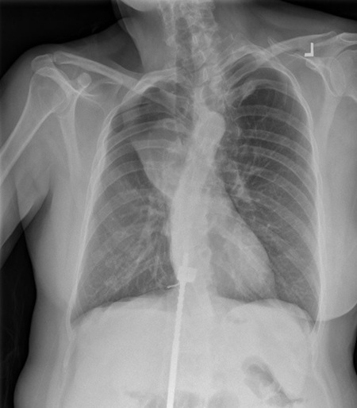
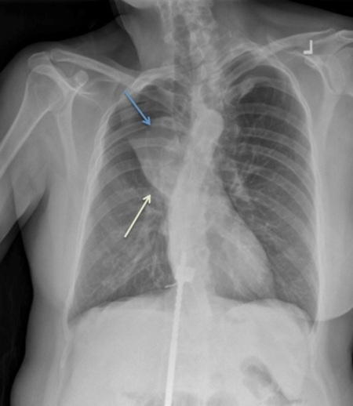
ATuberculosis(1%)
BMetastasis(1%)
CCarcinoid tumor(3%)
DPrimary bronchogenic carcinoma(94%)
Your answerD
Correct answerD. Primary bronchogenic carcinoma
Explanation
Primary bronchogenic carcinoma
The radiograph is an example of the "S-sign of Golden," which is a right upper lobe collapse related to bronchial obstruction from a hilar mass. The atelectatic right upper lobe is seen as an opacity (blue arrow), with evidence of volume loss such as superior migration of the minor fissure (green arrow). The Golden S sign is created by a central mass and should raise suspicion of a central neoplasm, such as primary bronchial carcinoma. The mass leads to bronchial obstruction due to extrinsic compression.
Incorrect Answers:
A. Tuberculosis can result in a hilar mass related to adenopathy. However, one would also expect to see some sort of pulmonary consolidation in addition to the adenopathy.
B. Metastases could produce this appearance, but the lack of other lesions in the lungs or bones makes this a less likely diagnosis.
C. A carcinoid tumor can produce bronchial obstruction and distal collapse but are typically an endobronchial process rather than producing extrinsic compression. Additionally, a strong smoking history should point to a different diagnosis.
Q24
moderate QID 44066
Correct
A 36-year-old female patient with pelvic pain undergoes an MRI. Which of the following is the diagnosis?
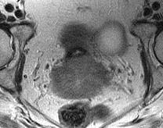
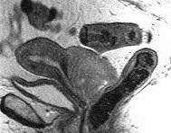
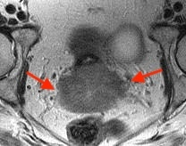
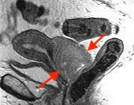
AEndometriosis(6%)
BCervical carcinoma(82%)
CLeiomyoma(8%)
DLeiomyosarcoma(3%)
EAdenomyosis(1%)
Your answerB
Correct answerB. Cervical carcinoma
Vital Concept
Cervical cancer demonstrates intermediate-to-high T2 signal intensity and restricted diffusion, contrasting with the low-signal fibrous cervical stroma.
Explanation
Cervical carcinoma
The T2 weighted images show an irregular and invasive hyperintense mass replacing the surrounding T2 hypointense cervical stroma.
Incorrect Answers:
A. Endometriosis represents extrauterine endometrial tissue, which can implant at almost any location but is most frequently seen in the rectouterine pouch. It appears as a T2 hyperintense lesion, typically with associated fluid-fluid levels, and T1 hyperintense hemorrhage. Alternatively, low T2 signal may be present (T2 shading) depending upon hemosiderin concentration. They may have a thickened enhancing fibrous capsule.
C. Uterine leiomyomas, or fibroids, classically appear as a sharply-marginated mass with low T1 signal, low T2 signal, and enhancement. If they become large and undergo hemorrhagic degeneration, their T1 and T2 signal may increase. Their T2 signal will also increase if cystic degeneration occurs. In these instances, the hemorrhagic or cystic region will show a lack of enhancement.
D. Degenerated or degenerating leiomyomas may be indistinguishable from leiomyosarcomas. If there is associated marked ascites, adenopathy, or invasion of adjacent structures, features which suggest an aggressive process, it would favor this diagnosis.
E. Adenomyosis represents an extension of endometrial glandular tissue into the myometrium. It often presents as cyclic pain with abnormal bleeding. MRI is the diagnostic test of choice.
Vital Concept: Cervical cancer demonstrates intermediate-to-high T2 signal intensity and restricted diffusion, contrasting with the low-signal fibrous cervical stroma.
Q25
easy QID 22602
Correct
A 4-year-old male patient presents for evaluation of seizures. Which of the following is the most likely finding on clinical examination?
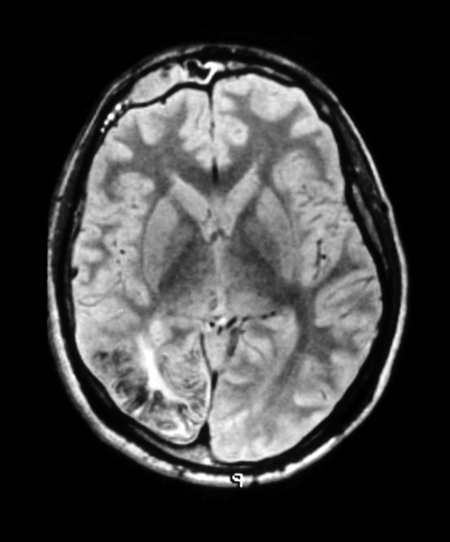
AAxillary freckling(1%)
BAsh leaf macule(2%)
CPort wine stain(93%)
DLisch nodules(2%)
EMucocutaneous pigmented macules(2%)
Your answerC
Correct answerC. Port wine stain
Explanation
Port wine stain
Port wine stain is a facial angiomatous physical exam finding seen in patients with Sturge-Weber syndrome. Findings of Sturge-Weber syndrome include ipsilateral cortical volume loss, “tram-track” calcification and frontal hyperostosis.
Incorrect Answers:
A and D. Axillary freckling and Lisch nodules are common clinical findings in patients with neurofibromatosis type 1. Typical intracranial findings are T2 hyperintense “NF spots” and optic pathway gliomas.
B. Ash leaf macules are typical clinical findings in patients with tuberous sclerosis complex. Intracranial findings in these patients typically include calcified subependymal nodules, cortical tubers, and white matter lesions.
E. Mucocutaneous pigmented macules are typically seen in patients with Peutz-Jeghers syndrome and are frequently seen on the lips, buccal, and gingival mucosa. This is a hamartomatous polyposis syndrome in which patients develop small bowel polyps and are at increased risk for associated small bowel obstructions and carcinoma.
Vital Concept
:
Sturge-Weber syndrome also shows pial enhancement on post-gadolinium images, typically involving occipital and posterior parietal cortex ipsilateral to the facial port-wine stain. Associated findings include progressive cerebral atrophy, subcortical calcification, choroidal angioma, and prominent deep medullary veins due to absent superficial cortical venous drainage.
Q26
QID 43909
Incorrect
Regarding the diagnosis of astrocytoma, which of the following statements is accurate?
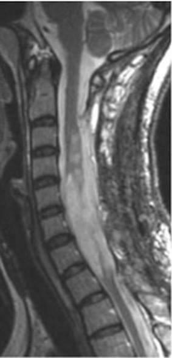
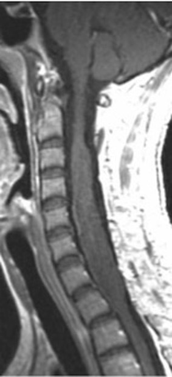
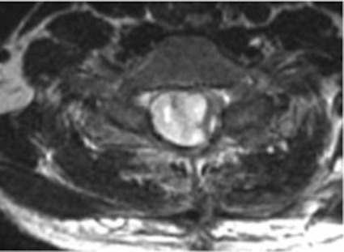
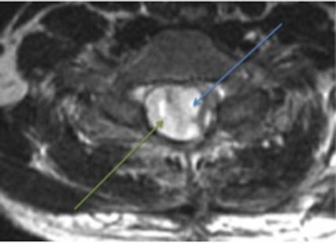
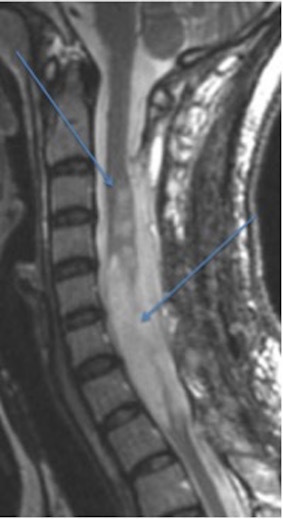
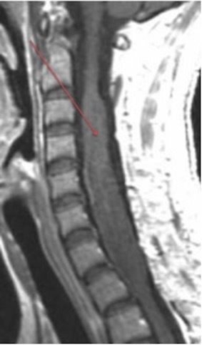
AThey are the second most common pediatric spinal tumor.(19%)
BThey can be definitively differentiated from ependymoma based on their imaging features.(5%)
CThere is an association with type I neurofibromatosis.(51%)
DThe clinical presentation is typically asymptomatic.(3%)
EThey generally have a higher grade than intracranial astrocytomas.(22%)
Your answerE
Correct answerC. There is an association with type I neurofibromatosis.
Explanation
There is an association with type I neurofibromatosis.
The sagittal T1 image shows a large intramedullary lesion expanding the cord (red arrow), which on T2 sequences can be seen as multiple foci of signal abnormality (blue arrows). Further, on the axial T2 sequence, there is an exophytic, extramedullary component (green arrow).
Ependymomas and astrocytomas are the most common intramedullary tumors, accounting for more than 90%. Because these lesions have different treatment approaches, numerous studies describe specific imaging features in the hope of making a definitive imaging diagnosis. These include older age, central location, well-defined margin, syringohydromyelia, and cap sign as characteristic of ependymoma, as compared to astrocytoma. Unfortunately, although specific imaging features may be more suggestive of one lesion over the other, in many cases the preoperative differentiation between these two tumors cannot be made with confidence due to frequently overlapping imaging features.
Astrocytomas are the most common spinal cord tumor in children. Like many intramedullary masses, the clinical presentation is typically that of pain, weakness, and sensory abnormality. Spinal astrocytomas are associated with type I neurofibromatosis, though less so than their intracranial counterparts. Spinal astrocytomas generally have a lower grade than intracranial astrocytomas.
Q27
hard QID 48958
Incorrect
When decreasing electronic magnification in fluoroscopy in a thin pediatric patient, which of the following occurs when using an I.I. system? (Assuming Automatic Brightness Control is enabled)
ARadiation dose increases.(21%)
BSignal-to-noise ratio decreases.(22%)
CCollimation increases.(4%)
DImage brightness is unchanged.(53%)
Your answerB
Correct answerD. Image brightness is unchanged.
Vital Concept
Decreased magnification with ABC improves SNR - larger field collects more photons while ABC reduces dose rate, distributing noise over greater area.
Explanation
Image brightness is unchanged.
Brightness gain is a function of (input phosphor diameter/output phosphor diameter). When decreasing electronic magnification, there is an increase in the amount of input phosphor being exposed, which results in less magnification. There are then more photons hitting the phosphor area which will cause an increase in image brightness.
However, the automatic brightness control in fluoroscopy always maintains image brightness, unless the maximum intensity is reached. This would be unlikely for a thin pediatric patient.
Incorrect Answers:
A. After decreasing magnification, radiation dose would be expected to decrease.
B. If magnification is decreased, noise is distributed over a larger area resulting in increased SNR.
C. Collimation would decrease in this situation.
Vital Concept: Decreased magnification with ABC improves SNR - larger field collects more photons while ABC reduces dose rate, distributing noise over greater area.
Q28
moderate QID 37552
Correct
Which of the following patients will have the greatest degree of absorbed dose to their breast, assuming equal thickness?
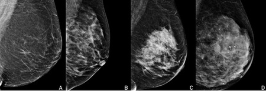
AA(2%)
BB(0%)
CC(9%)
DD(89%)
Your answerD
Correct answerD. D
Vital Concept
Dense breast tissue contains primitive epithelial cells highly susceptible to radiation damage, increases cancer risk, and decreases mammographic sensitivity by masking lesions, requiring consideration of supplemental screening modalities.
Explanation
D
The breasts pictured demonstrate the 4 BI-RADS breast density categories:
Glandular tissue has a higher density than adipose.
Thus, for breasts of the same thickness, more glandular breasts will require a higher phototimed mAs. The result will be a higher dose. Thus, the extremely dense breast will have the highest dose, assuming relative equal thickness.
Incorrect Answers:
A. B. C. These are incorrect answers.
Vital Concept: Dense breast tissue contains primitive epithelial cells highly susceptible to radiation damage, increases cancer risk, and decreases mammographic sensitivity by masking lesions, requiring consideration of supplemental screening modalities.
Q29
QID 3028
Incorrect
A female patient presents reporting pain in the left lower limb especially below the knee. Color Doppler and spectral Doppler ultrasound images are shown below. Which of the following is most likely true?
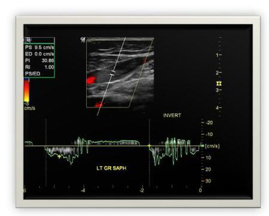
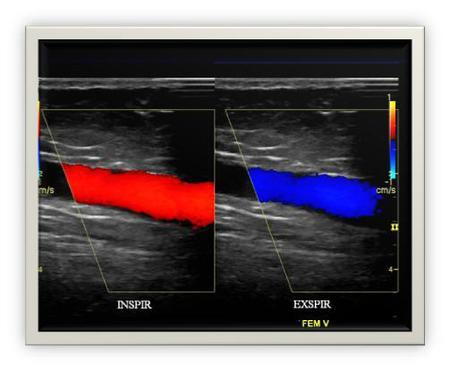
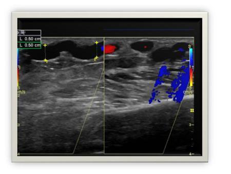
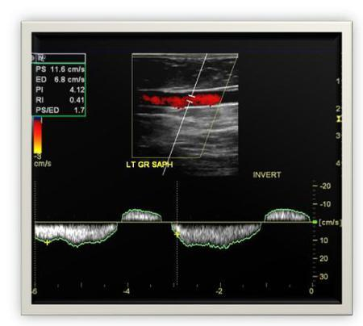
AEvidence suggests deep vein thrombosis.(5%)
BThese are normal findings of the deep veins and the superficial veins of the lower limb.(1%)
CThe left femoral vein shows normal flow.(3%)
DThere is evidence of arteriovenous (AV) malformation.(1%)
EThere is incompetence of both great saphenous and femoral veins; evidence of superficial varicose veins is also present.(91%)
Your answerC
Correct answerE. There is incompetence of both great saphenous and femoral veins; evidence of superficial varicose veins is also present.
Vital Concept
Chronic venous insufficiency is diagnosed by prolonged retrograde flow exceeding 0.5 seconds in superficial veins after augmentation. Respiratory flow reversal in deep veins is highly suspicious for severe deep vein valvular dysfunction.
Explanation
There is incompetence of both great saphenous and femoral veins; evidence of superficial varicose veins is also present.
Spectral doppler of the left lower extremity shows up to 2 seconds of reflux in the great saphenous vein (GSV) with color Doppler flow in the left femoral vein that reverses with respiration. Dilated serpiginous structures are present in the superficial soft tissues.
The 2-second GSV reflux far exceeds the 0.5-second threshold for superficial venous incompetence, while respiratory flow reversal in the femoral vein is highly suspicious for severe valvular dysfunction. The dilated serpiginous structures represent varicose veins from chronic venous hypertension. This combination indicates advanced chronic venous insufficiency.
Incorrect Answers:
A. There is no evidence of thrombosis resulting in absent flow within any of the veins shown.
B. This is not a normal study. As described earlier, there is a significant pathology involving the venous system.
C. The femoral vein shows significant reflux during inspiration. This is seen as a change in the color signals during inspiration and expiration.
D. There is no evidence of arteriovenous shunting or abnormal arteriovenous vascular malformations. This will be seen as a very high-velocity flow within the vessels above.
Vital Concept: Chronic venous insufficiency is diagnosed by prolonged retrograde flow exceeding 0.5 seconds in superficial veins after augmentation. Respiratory flow reversal in deep veins is highly suspicious for severe deep vein valvular dysfunction.
Q30
easy QID 48116
Correct
An avulsion fracture at which location in an adult is considered pathognomonic for a pathologic fracture?
APubic symphysis(3%)
BGreater trochanter(7%)
CLesser trochanter(86%)
DAnterior superior iliac spine(3%)
EAnterior inferior iliac spine(2%)
Your answerC
Correct answerC. Lesser trochanter
Vital Concept
Isolated lesser trochanter fractures in adults without adequate trauma are highly suspicious for metastatic disease, requiring investigation for occult primary tumors as most cases are associated with underlying malignancy.
Explanation
Lesser trochanter
In the absence of a traumatic event, an isolated fracture of the lesser trochanter should suggest an underlying pathological process, particularly a primary or metastatic tumor. To avoid inappropriate operative procedures, a pathological diagnosis must be made by means of a biopsy before internal fixation is attempted. There are two primary causes of avulsion of the lesser trochanter: strenuous flexion of the hip in adolescent athletes with open epiphyses, and pathological fracture associated with a metastatic lesion of bone. In both cases, stress concentration at the site of the iliopsoas muscle leads to a tensile failure of either the apophysis or the lesser trochanter. Typically, the force necessary to avulse an otherwise normal apophysis is much greater than that required to produce a pathological fracture, and the latter mechanism is rarely associated with a history of trauma.
Avulsion fractures result when the fracture fragment is pulled from its parent bone by forceful contraction of a tendon or ligament. Avulsion fractures are most common in younger individuals engaging in athletic endeavors. In the pelvis, the newly formed secondary centers of ossification, the apophyses, are the most likely portions of the bone to avulse. Since the apophyses tend to form at puberty, most of these pelvic avulsions occur at puberty. In general, they are uncommon injuries, seen almost exclusively in adolescent athletes, with a 2:1 male to female preponderance. They occur most often in track events like hurdling and sprinting, or games like soccer or tennis. Most common to avulse is the ischial tuberosity, followed by anterior inferior iliac spine and the anterior superior iliac spine about equally. Pubic symphysis avulsions, as in sports hernias, are less frequently involved. Greater trochanteric avulsion fractures are very rare.
Vital Concept: Isolated lesser trochanter fractures in adults without adequate trauma are highly suspicious for metastatic disease, requiring investigation for occult primary tumors as most cases are associated with underlying malignancy.
Q31
moderate QID 24051
Correct
A 45-year-old patient with a history of severe acute pancreatitis presents with upper gastrointestinal bleeding. Angiography is performed. Which vessel is indicated by the arrow?
ACeliac axis(4%)
BSplenic artery(0%)
CGastroduodenal artery(90%)
DSuperior pancreaticoduodenal artery(5%)
ESuperior mesenteric artery(1%)
Your answerC
Correct answerC. Gastroduodenal artery
Explanation
Gastroduodenal artery
The gastroduodenal artery (GDA - red arrow) is being selectively catheterized here. This vessel typically arises as a branch of the common hepatic artery (A - green arrow). It has a short and nearly vertical course. It is a frequent source of GI bleeding associated with peptic ulcer disease of the duodenum. It is also a common source of bleeding as a complication of acute pancreatitis.
Incorrect Answers:
B. The splenic artery is not seen here as it arises more proximal to where the catheter is placed.
D. The superior pancreaticoduodenal artery is a branch of the GDA (yellow arrow).
E. The superior mesenteric artery has a separate origin from the aorta.
Vital Concept
:
Gastroduodenal artery pseudoaneurysm results from proteolytic enzyme erosion during pancreatitis, requires CT angiography for diagnosis, and mandates immediate endovascular embolization due to high rupture risk even when asymptomatic.
Q32
hard QID 4964
Incorrect
A catheter-directed intra-arterial injection of 15 mg of alteplase is administered. Which time is closest to when the serum concentration will be at a level <5%?
A5 minutes(11%)
B25 minutes(49%)
C1 hour(19%)
D6 hours(16%)
E12 hours(5%)
Your answerD
Correct answerB. 25 minutes
Vital Concept
Alteplase has a serum half-life of about 5 minutes; after 5 half-lives, serum concentration is below 5%.
Explanation
25 minutes
The serum half-life of alteplase is approximately 5 minutes. The drug concentration will be at a level < 5% after 5 half-lives, which is after about 25 minutes.
Incorrect Answers:
A. C. D. These answers are incorrect.
Vital Concept: Alteplase has a serum half-life of about 5 minutes; after 5 half-lives, serum concentration is below 5%.
Q33
QID 2837
Correct
A 56-year-old female with a history of L5/S1 discectomy 3 months ago presents with new radiculopathy. MRI was performed. Pre-contrast and post-contrast T1-weighted sagittal MRI images are shown below. Which of the following is the finding and likely cause of the patient's symptoms?
AEpidural enhancing material at L5/S1, recurrent disk herniation(13%)
BEpidural non-enhancing material at L5/S1, recurrent disk herniation(2%)
CEpidural enhancing material at L5/S1, scarring/granulation tissue(83%)
DEpidural non-enhancing material at L5/S1, scarring/granulation tissue(2%)
EImaging was performed too early so the study is indeterminate(1%)
Your answerC
Correct answerC. Epidural enhancing material at L5/S1, scarring/granulation tissue
Vital Concept
The presence of contrast enhancement indicates vascular scar tissue rather than avascular disc material, making this the fundamental imaging principle that allows contrast-enhanced magnetic resonance imaging to reliably distinguish between recurrent herniation and post-surgical fibrosis in failed back surgery syndrome patients.
Explanation
Epidural enhancing material at L5/S1, scarring/granulation tissue
Epidural enhancing tissue indicates scarring because scar tissue is vascular and enhances with contrast, while disc material is avascular and does not enhance.
Following spinal surgery, the key differential is between recurrent disc herniation versus epidural fibrosis. Disc herniation consists of avascular fibrocartilaginous material that shows little to no enhancement on post-contrast T1-weighted images. Epidural fibrosis contains newly formed blood vessels and inflammatory granulation tissue that readily enhances with gadolinium contrast, as seen in the images above.
Incorrect Answers:
A. Given the presence of enhancement, this would be inconsistent with recurrent disc herniation.
B. D. On the post-contrast image there is enhancement of the material posterior to the disc space.
E. The image was obtained 3 months after surgery. It is an optimum time interval for assessment of postoperative complications.
Vital Concept: The presence of contrast enhancement indicates vascular scar tissue rather than avascular disc material, making this the fundamental imaging principle that allows contrast-enhanced magnetic resonance imaging to reliably distinguish between recurrent herniation and post-surgical fibrosis in failed back surgery syndrome patients.
Q34
easy QID 56197
Correct
A 65-year-old male patient presents with right hemiparesis and a computed tomography angiogram (CTA) was obtained as part of the workup. Which of the following does the blue arrow identify?
ASubclavian steal(1%)
BDuplication of the left subclavian artery(1%)
CLeft vertebral artery(98%)
DLeft carotid artery dissection(0%)
Your answerC
Correct answerC. Left vertebral artery
Vital Concept
Direct origin of the left vertebral artery from the aortic arch is a common asymptomatic variant occurring in up to 8% of the population. Recognition is important for preoperative surgical planning and interventional procedures.
Explanation
Left vertebral artery
The image demonstrates a normal variant of arterial anatomy at the origin of the great vessels from the aortic arch. This occurs in approximately 5% of patients. The following normal vessels are noted above: right common carotid artery (orange arrow), brachiocephalic artery (pink arrow), right vertebral artery (brown arrow), left common carotid artery (yellow arrow), left subclavian artery (purple arrow). Of note, there is an additional normal variation of aortic arch anatomy, with a common origin of the left common carotid artery and the brachiocephalic artery. This is sometimes referred to as a bovine arch, although this term is not preferred. This variant is seen in 25% of the population.
Incorrect Answers:
A. Subclavian steal is not an anatomic variant but refers to retrograde flow of blood in the left vertebral artery which supplies the left subclavian artery and the subsequent more distal upper extremity with blood flow. This occurs secondary to a proximal left subclavian high-grade stenosis or occlusion. This answer is primarily included as a distractor for this question; however this pathology could be demonstrated on magnetic resonance angiogram (MRA).
B. Duplication of the left subclavian artery. This answer is meant to be a distractor, because the origin of the vessel arises from the aortic arch, directly adjacent to the normal left subclavian artery.
C. Left carotid artery dissection. This answer is included because of the small caliber of the vessel that arises from the aortic arch. The common and internal carotid artery in this case are well-seen and are normal in caliber.
Vital Concept: Direct origin of the left vertebral artery from the aortic arch is a common asymptomatic variant occurring in up to 8% of the population. Recognition is important for preoperative surgical planning and interventional procedures.
Q35
hard QID 43905
Correct
Which of the following is the most likely mechanism of this 10-year-old male patient's elbow injury?
AVarus stress force(49%)
BAxial traction on the arm with the elbow in full extension(30%)
CHyperextension(9%)
DFall on an outstretched hand(5%)
Your answerA
Correct answerA. Varus stress force
Vital Concept
Although ligamentous injuries in isolation are rare, patients may present with varus or valgus laxity due to overuse or trauma. Tear of the radial collateral ligament (RCL) and associated avulsion fractures are most commonly associated with traumatic varus stress forces. If the traumatic varus stress force is significant enough, additional fracture/dislocation and ligamentous injuries of the elbow can be seen, as in this case.
Explanation
Varus stress force
The coronal magnetic resonance (MR) images show a displaced avulsion fracture of the lateral epicondyle (red arrow), with an intact radial collateral ligament (yellow arrow). A complete tear of the medial collateral ligament is also present (orange arrow), with significant muscular contusion in the forearm, marked by soft tissue edema (blue arrow), as well as a joint effusion (purple arrow). These findings are compatible with a complex fracture/dislocation of the elbow joint. Given the area of muscular contusion along the medial forearm, this is likely the point of traumatic impact indicating a varus stress force as the mechanism of injury.
Incorrect Answers:
B. Axial traction on the arm with the elbow in full extension, commonly caused by forcefully pulling on the wrist of a young child (causing a “nursemaid's elbow”) causes trauma to the radial annular ligament.
C. Hyperextension injuries of the elbow can cause a variety of injuries, most commonly fractures of the olecranon and coronoid.
D. A fall on an outstretched hand is the typical mechanism of a radial head or neck fracture.
Vital Concept: Although ligamentous injuries in isolation are rare, patients may present with varus or valgus laxity due to overuse or trauma. Tear of the radial collateral ligament (RCL) and associated avulsion fractures are most commonly associated with traumatic varus stress forces. If the traumatic varus stress force is significant enough, additional fracture/dislocation and ligamentous injuries of the elbow can be seen, as in this case.
In complex fracture/dislocation of the elbow joint, strain, attenuation, or rupture of the medial UCL with possible associated medial epicondylar avulsion injury can also be seen. An ulnar collateral ligament (UCL) tear or sprain can otherwise occur with valgus overload or stress movement from pitching or throwing. Typically seen in younger male pitchers, a UCL tear or sprain could also be found in athletes involved in repetitive overhead activities like tennis or volleyball.
Q36
hard QID 21033
Incorrect
A 43-year-old male patient presents with colicky abdominal pain, nausea, and vomiting. Which of the following is the most likely diagnosis?
AMidgut volvulus(5%)
BSigmoid volvulus(9%)
CCecal volvulus(69%)
DAcute small bowel obstruction(17%)
EColonic adenocarcinoma(0%)
Your answerD
Correct answerC. Cecal volvulus
Explanation
Cecal volvulus
The radiographic findings of a gas-filled, distended cecum directed toward the upper abdomen (blue arrows) in a kidney bean or coffee bean shape with whirled mesentery in the right lower quadrant (red arrow), contrast-filled dilated small bowel (yellow arrows), and the relative paucity of distal large bowel gas is most suggestive of cecal volvulus. Though the dilated cecum appears in the midline on the provided radiograph, cecal volvulus is characteristically described as extending into the left upper quadrant. Sigmoid volvulus can have a similar appearance but is characteristically described extending into the right upper quadrant on radiograph. However, cecal volvulus is most likely in this case given the findings of right lower quadrant transition point and whirled mesentery depicted on CT.
This is usually related to a redundant cecum with a congenital defect in the attachment of the right colon. It is not to be confused with a cecal bascule, which is the anterior folding of a redundant cecum, which can produce obstructive-type colicky pain.
Incorrect Answers:
A. Midgut volvulus is commonly seen in patients with intestinal malrotation and produces proximal small bowel dilatation, commonly in pediatric patients. The fluoroscopic finding of a corkscrew sign on lateral contrast fluoroscopy is a characteristic finding. Midgut volvulus is a surgical emergency in the pediatric population.
B. Sigmoid volvulus is suggested by an omega shaped, gas-filled, dilated sigmoid colon directed toward the right upper quadrant on radiograph. There is usually associated proximal colonic and small bowel obstructive dilatation with a transition point in the left lower quadrant, most reliably depicted on CT.
D. Acute small bowel obstruction could be considered in this patient. However, the presence of the bean-shaped gas-filled viscus in the right lower quadrant should make one think of cecal volvulus.
E. Colonic adenocarcinoma can produce a large bowel obstruction at any colonic segment and should be on the differential for colonic dilatation. However, the presence of the kidney bean-shaped viscus in the right lower quadrant should point one to a different diagnosis.
Q37
moderate QID 5018
Correct
A technologist brings a provider the following delayed images from an MDP bone scan and is concerned that something is wrong. What should the provider tell the technologist?
AThe patient's dose was too small.(2%)
BThe patient is in renal failure.(8%)
CThe camera energy peak is set incorrectly.(84%)
DThe camera uniformity needs correcting.(4%)
EThe image appearance is related to truncation artifact.(1%)
Your answerC
Correct answerC. The camera energy peak is set incorrectly.
Explanation
The camera energy peak is set incorrectly.
The images show a "fuzzy" appearance to the bones, which is most commonly related to off-peak imaging. This results from the selected gamma camera energy peak differing from the actual radionuclide energy. The most frequent situation when off-peak imaging occurs is when the technologist forgets to reset the energy peak after the daily uniformity test. Co-57 flood sources are frequently used and have an energy peak of 122 keV, which is slightly below the 140 keV energy of Tc-99m. It is important to remember that this can appear nearly identical to photomultiplier tube voltage drift. This appearance is not the result of an inadequate dose or a "superscan" related to renal failure. Poor uniformity usually results in a spotty appearance to the images. Truncation artifact is related to SPECT imaging.
Q38
easy QID 38067
Correct
The appropriateness criteria were designed to assist referring physicians in making appropriate imaging decisions for given patient clinical conditions. They are developed and maintained by which of the following?
AThe American College of Radiology(97%)
BThe American Board of Radiology(2%)
CThe Center for Medicare and Medicaid Services(1%)
DThe Institutes of Medicine(0%)
EThe American Medical Association(1%)
Your answerA
Correct answerA. The American College of Radiology
Explanation
The American College of Radiology
The American College of Radiology (ACR) has developed a group of documents known as the ACR Appropriateness Criteria. Their primary purpose is to “assist referring physicians in making appropriate imaging decisions for given patient clinical conditions.” Their initial development began in 1993, and they have been constantly updated and expanded since then. As of May 2014, there are 201 Clinical Conditions and 983 Variants covered by the Appropriateness Criteria, including topics in Diagnostic Radiology, Interventional Radiology, and Radiation Oncology.
Incorrect Answers:
B. The American Board of Radiology (ABR) is a nonprofit physician-led organization. It oversees the certification and ongoing professional development of specialists in Diagnostic Radiology, Radiation Oncology, and Medical Physics. Its mission is to serve patients, the public, and the medical profession by certifying that its diplomates have acquired, demonstrated, and maintained a requisite standard of knowledge, skill, and understanding essential to the practice of Diagnostic Radiology, Interventional Radiology, Radiation Oncology, and Medical Physics. The board certifies its diplomates through a comprehensive process involving educational requirements, professional peer evaluation, and examination.
C. The Centers for Medicare and Medicaid Services (CMS) is a federal agency within the United States Department of Health and Human Services (DHHS) that administers the Medicare program and works in partnership with state governments to administer Medicaid, the State Children’s Health Insurance Program (SCHIP), and health insurance portability standards.
D. The Institute of Medicine (IOM) is an American nonprofit nongovernmental organization founded in 1970, under the congressional charter of the National Academy of Sciences. Its purpose is to provide national advice on issues relating to biomedical science, medicine, and health, and its mission is to serve as adviser to the nation to improve health.
E. The American Medical Association (AMA) is the largest organization of physicians and medical students in the United States. Its stated mission is to promote the art and science of medicine for the betterment of the public health, to advance the interests of physicians and their patients, to promote public health, to lobby for legislation favorable to physicians and patients, and to raise money for medical education.
Q39
QID 43921
Incorrect
Which of the following is the least useful in distinguishing benign from malignant compression fractures?
AFluid or gas within the vertebral body(28%)
BLower T1 signal(22%)
CContrast enhancement(40%)
DSoft tissue component(3%)
EPosterior element involvement(6%)
Your answerE
Correct answerC. Contrast enhancement
Explanation
Contrast enhancement
The spine is a very common site for metastases and it has been reported that more than 18,000 patients per year are diagnosed with spinal metastatic disease. Contrast is typically less useful in differentiating a benign from a malignant fracture, as both types of acute and subacute fractures enhance in unhealed areas. The use of contrast is still very important to evaluate for intraspinal and epidural involvement.
Distinguishing an acute osteoporotic fracture from a pathologic fracture is often challenging. A myriad of findings on routine magnetic resonance (MR) sequences are suggestive of a benign origin of a spine fracture.
They include:
maintenance of at least some normal marrow signal
no involvement of the posterior elements
fluid, or gas within the vertebral body
low intensity band along the fractured endplate
lack of distinct soft tissue mass
a well-defined fracture line
limited paravertebral soft tissue thickening, swelling, or mass
preservation of the posterior cortex or a non-convex border retropulsed bone fragments with sharply marginated or angulated borders
normal marrow signal in adjacent vertebral bodies or ribs
anterior wedging
known osteoporosis or osteopenia
lack of cervical or high thoracic lesion
Incorrect Answers:
A. B. D. As discussed above, these are more useful indicators than contrast enhancement.
Q40
QID 21511
Incorrect
A 45-year-old female patient with a history of left salpingo-oophorectomy for endometriosis was found to have a right-sided pelvic mass on ultrasound, prompting further evaluation with magnetic resonance imaging (MRI). The mass was noted to be separate from the right ovary. Which of the following is the most likely diagnosis?
ASerous cystadenoma(6%)
BMucinous cystadenoma(14%)
CSerous cystadenocarcinoma(9%)
DMucinous cystadenocarcinoma(20%)
EClear cell carcinoma(52%)
Your answerD
Correct answerE. Clear cell carcinoma
Explanation
Clear cell carcinoma
The right-sided pelvic mass in this patient is separate from the right ovary, but has features of an endometrioma, including a portion of the mass that has high intrinsically high T1 signal on the fat saturated T1-weighted images with associated T2-shading.
However, the posterior portion of the mass enhances, indicating a large solid component. Given the history of endometriosis and prior surgery, the likely diagnosis is malignant transformation of an endometrioma. Women with endometriosis are at risk for developing both clear cell and endometrioid subtypes of epithelial ovarian cancer. It is important to remember this key association.
Incorrect Answers:
A. The typical MR imaging appearance of serous cystadenoma is a unilocular thin-walled adnexal cyst. MRI may show a beak sign which may suggest an ovarian origin.
Signal characteristics within the cyst are usually homogeneous.
B. Mucinous cystadenomas are usually seen as large multilocular cysts containing fluids of various viscosity. Due to this reason, the loculi of the tumors often show variable signal intensities on both T1 and T2 sequences. This can sometimes give a stained glass appearance. They rarely appear as unilocular cysts.
C. MRI provides the most detailed imaging evaluation for ovarian malignancies and may be used in either preoperative evaluation or post-treatment follow up.
The cystic components are high T2, low T1 signal unless there has been intralesional hemorrhage (c.f., where there is typically slightly increased T1 signal of the cystic component).
Q41
easy QID 24050
Correct
An angiogram was performed for a patient presenting with hemoptysis. Which vessel is indicated by the arrow shown below?
ALeft pulmonary artery(0%)
BArtery of Adamkiewicz(93%)
CPosterior spinal artery(3%)
DLeft bronchial artery(2%)
ELeft internal mammary artery(2%)
Your answerB
Correct answerB. Artery of Adamkiewicz
Vital Concept
Spinal arteries at T4-T5 levels can arise from intercostobronchial trunks and display characteristic hairpin morphology that should be identified on angiography to prevent spinal cord infarction during bronchial artery embolization and other procedures in the vicinity.
Explanation
Artery of Adamkiewicz
This vessel most often arises from lower thoracic intercostal arteries or upper lumbar arteries and provides the majority of the blood supply of the anterior spinal cord. It takes a classic “hairpin” turn before ascending and descending to provide arterial flow to the spinal cord, as denoted by the arrow here.
Occasionally, it arises from the left bronchial artery (the vessel the tip of the catheter is within), as in this case.
Incorrect Answers:
A. The left pulmonary artery is much larger and has a hilar origin.
C. The posterior spinal artery arises from the vertebral artery, much more cranial.
D. The left bronchial artery is a branch of the thoracic aorta, seen here giving off the anterior spinal artery.
E. The left internal mammary artery arises from the subclavian artery and parallels the sternum.
Vital Concept: Spinal arteries at T4-T5 levels can arise from intercostobronchial trunks and display characteristic hairpin morphology that should be identified on angiography to prevent spinal cord infarction during bronchial artery embolization and other procedures in the vicinity.
Q42
easy QID 37563
Correct
Which of the following is the appropriate BI-RADS term for the finding seen on this fat-saturated T1W post-contrast image? (Note: lesion depicted measures 2 mm in size in all three dimensions)
ABackground parenchymal enhancement(1%)
BNon-mass enhancement(6%)
CEnhancing mass(91%)
DCyst(2%)
EIntrinsically high T1 signal(1%)
Your answerC
Correct answerC. Enhancing mass
Explanation
Enhancing mass
This refers to a tiny spot of enhancement that can be seen in all three dimensions. In previous versions of BIRADS, this finding would be described as a 'focus'. Focus has since been removed from ACR BIRADS as part of its recent update to version 6. Given its space-occupying appearance in all three dimensions, this finding would best be described as a mass, despite its small size.
Incorrect Answers:
A. Background parenchymal enhancement on breast MRI refers to normal enhancement of the patient's fibroglandular tissue. It is typically not as focal as the findings seen here. Breast tissue is under hormonal influence, and as such will vary in vascularity and physiology depending on the phase of the menstrual cycle. Background parenchymal enhancement peaks before the onset of menses and can lead to false-positive studies.
B. Non-mass enhancement describes the enhancement of an area that is not a mass. This includes enhancement patterns that may extend over small or large regions, and whose internal enhancement characteristics can be described as a pattern discrete from normal surrounding breast parenchyma. With the exception of homogeneous internal-enhancement patterns, non-mass-like enhancement will have areas or spots of normal glandular tissue or fat interspersed between the abnormally enhancing components.
D. A cyst would be T1 hypointense with less associated enhancement.
E. Intrinsically high T1 signal is incorrect as this is a subtraction image, which is specifically designed to negate the effects of intrinsic high T1 signal (such as hemorrhage).
Q43
hard QID 58008
Correct
From LOWEST spatial resolution to HIGHEST spatial resolution, what is the correct order of the following modalities in routine practice: radiography, computed tomography (CT), and magnetic resonance imaging (MRI)?
ARadiography, CT, MRI(16%)
BMRI ,CT , Radiography(75%)
CCT, MRI, radiography(4%)
DMRI, radiography, CT(5%)
Your answerB
Correct answerB. MRI ,CT , Radiography
Vital Concept
Digital radiographs generally have a limiting resolution of three-line pairs per millimeter.
Explanation
MRI ,CT , Radiography
Explanation:
The correct order of spatial resolution from lowest to highest is MRI, CT, radiography. Spatial resolution refers to the ability of an imaging modality to accurately discriminate between two objects. It is important to distinguish this from contrast resolution, which refers to the ability to differentiate between two objects based on intensity.
Spatial resolution can be measured using phantoms provided by the American College of Radiology. Phantoms contain internal bar patterns with differing line pairs/centimeters which assess whether current imaging hardware is meeting established standards.
Incorrect Answers:
A. CT and MRI have lower spatial resolution than radiography.
C. MRI has a lower spatial resolution compared to CT.
D. Radiography has a higher spatial resolution compared to CT.
Vital Concept: Digital radiographs generally have a limiting resolution of three-line pairs per millimeter.
For CT, the limiting spatial resolution performance can be improved up to 0.5 line pair per millimeter, and thus an order of magnitude worse than film-screen combination and four times worse than digital chest radiography. CT has excellent imaging characteristics and anatomic localization compared with any type of projection imaging but also has inferior spatial resolution performance.
The resolution of CT is superior to the resolution of magnetic resonance imaging (MRI), which is typically 1–2 mm for most sequences and more than adequate for most clinical applications of CT.
Q44
moderate QID 37657
Correct
Which of the following statements is accurate regarding the radiotracer used in this study?
AIt is a fructose analog(8%)
BIt was produced in a synchrotron(2%)
CIt decays by positron emission(80%)
DIt has a 4 hour half-life(5%)
EThe critical organ is the kidney(4%)
Your answerC
Correct answerC. It decays by positron emission
Explanation
It decays by positron emission
The study shows normal distribution of F-18 fluorodeoxyglucose (FDG), a glucose analog used frequently in oncologic imaging. FDG is a positron emitter, and as such its production and incorporation into PET radiopharmaceuticals is expensive, requiring a cyclotron or other accelerator.
Incorrect Answers:
A. It is a glucose analog, not a fructose analog.
B. As FDG is a positron emitter, its production and incorporation into PET radiopharmaceuticals is expensive, requiring a cyclotron or other accelerator.
D. It has a half-life of 2 hr, not 4.
E. The critical organ for FDG, which receives the highest doses of radiation during the physiological distribution and clearance of the radiopharmaceutical, is the bladder.
Q45
hard QID 2758
Incorrect
A CT was performed in a 30-year-old patient to evaluate symptoms of diverticulitis. An incidental pancreatic tail lesion was found and was resected. Pathology demonstrated a solid pseudopapillary neoplasm. Which of the following statements is true about this tumor?
APatients are generally male(2%)
BLarger tumors (>3 cm) more commonly present in the pancreatic head(5%)
CThey are usually solid with no cystic component(11%)
DThese lesions can present with peripheral calcification(72%)
EHas high malignant potential(10%)
Your answerC
Correct answerD. These lesions can present with peripheral calcification
Vital Concept
Solid pseudopapillary neoplasm (SPN) is a pancreatic lesion most common in women with low malignant potential. Despite its name, SPN most commonly present as a mixed cystic/solid lesion. Larger SPN (>3 cm) tends to present in the pancreatic body/tail. Peripheral calcifications are most common in lesions >5 cm.
Explanation
These lesions can present with peripheral calcification
This is a case of solid pseudopapillary neoplasm (also known as a SPN tumor, previously known as solid and papillary epithelial neoplasm—SPEN tumor). Peripheral calcifications can be seen but are most likely present in lesions >5 cm. They are more common in women. Patients are generally under 40-years-old.
Incorrect Answers:
A. SPN is more common in women. Patients are generally under 40-years-old.
B. SPN more commonly presents in the pancreatic body/tail when larger than 3 cm.
C. Despite the name of this entity, SPN presents as a mixed cystic/solid lesion in just over 50% of cases. Tumors smaller than 3 cm have the highest likelihood of being completely solid.
E. These lesions have low malignant potential; still, since patients are generally young and since there is some malignant potential, surgical resection is recommended.
Vital Concept: Solid pseudopapillary neoplasm (SPN) is a pancreatic lesion most common in women with low malignant potential. Despite its name, SPN most commonly present as a mixed cystic/solid lesion. Larger SPN (>3 cm) tends to present in the pancreatic body/tail. Peripheral calcifications are most common in lesions >5 cm.
Q46
hard QID 21101
Correct
How would the physician grade the splenic injury in this patient based on the American Association for the Surgery of Trauma classification system?
AGrade I(9%)
BGrade III(78%)
CGrade IV(12%)
DGrade V(1%)
Your answerB
Correct answerB. Grade III
Vital Concept
AAST splenic injury scale is the most widely used splenic trauma grading system on a scale of I to V. One can advance one grade for multiple injuries, each up to grade III. A vascular injury (i.e. pseudoaneurysm or arteriovenous fistula) appears as a focal collection of vascular contrast which decreases in attenuation on delayed images. Active bleeding is defined as a focal or diffuse collection of vascular contrast which increases in size or attenuation on a delayed phase.
Explanation
Grade III
The American Association for Surgery of trauma (AAST) splenic injury scale is the most widely used splenic trauma grading system on a scale of I-V. This patient's injury overlaps with a grade III injury: subcapsular hematoma > 50% of surface area, intraparenchymal hematoma > 5 cm or expanding, laceration > 3 cm depth or involving trabecular vessels and/or ruptured subcapsular or parenchymal hematoma.
Incorrect Answers:
A. Grade I: Subcapsular hematoma < 10% of surface area or capsular laceration <1 cm depth.
C. Grade IV: Laceration involving segmental or hilar vessels with major devascularization (>25% of spleen) and/or any injury with a splenic vascular injury (e.g., pseudoaneurysm or AV fistula) or active bleeding within splenic capsule.
D. Grade V: Shattered spleen or hilar vascular injury with active bleeding extending into peritoneum.
Vital Concept: AAST splenic injury scale is the most widely used splenic trauma grading system on a scale of I to V. One can advance one grade for multiple injuries, each up to grade III. A vascular injury (i.e. pseudoaneurysm or arteriovenous fistula) appears as a focal collection of vascular contrast which decreases in attenuation on delayed images. Active bleeding is defined as a focal or diffuse collection of vascular contrast which increases in size or attenuation on a delayed phase.
Q47
moderate QID 2916
Correct
A T1 spin-echo image is obtained at 1.5 T using a 256 x 256 matrix. Which of the following statements regarding spatial resolution is true?
AIncreasing to a 512 x 512 matrix will improve spatial resolution.(81%)
BIncreasing the field of view (FOV) will improve spatial resolution.(2%)
CIncreasing to a 3 T field strength will improve spatial resolution.(6%)
DIncreasing the receiver bandwidth will improve spatial resolution.(4%)
EIncreasing the number of excitations (NEX) will improve spatial resolution.(7%)
Your answerA
Correct answerA. Increasing to a 512 x 512 matrix will improve spatial resolution.
Vital Concept
Increasing matrix size (with other parameters held equal) generally results in improved spatial resolution.
Explanation
Increasing to a 512 x 512 matrix will improve spatial resolution.
The primary determination of spatial resolution in MRI is voxel size, which is dependent upon the matrix size, field of view (FOV), and the slice thickness. The smaller the voxel, the higher the spatial resolution. Increasing the matrix size at the current FOV will result in smaller pixels and higher spatial resolution.
Incorrect Answers:
B. Increasing the FOV at the current matrix size will result in larger pixels and decreased spatial resolution.
C. Increasing the field strength will improve the signal-to-noise ratio (SNR), but not spatial resolution. It is important to understand the difference between spatial resolution and SNR.
D. Increasing the bandwidth of the receiver will improve acquisition time at the cost of decreased SNR. The spatial resolution is not directly altered by bandwidth.
E. Increasing the NEX will increase SNR by the square root of NEX at the cost of increased acquisition time but will not directly alter the spatial resolution.
Vital Concept: Increasing matrix size (with other parameters held equal) generally results in improved spatial resolution.
Q48
easy QID 18049
Correct
Which of the following is the most likely diagnosis for this 41-year-old male who came to the emergency room (ER) after a car accident?
AAortic mural hematoma(1%)
BAortic transection isolated(2%)
CAortic transection with pseudo-aneurysm formation(90%)
DIntimal tear(6%)
EAortic dissection(1%)
Your answerC
Correct answerC. Aortic transection with pseudo-aneurysm formation
Vital Concept
Aortic transection with pseudoaneurysm formation typically occurs at the aortic isthmus from deceleration forces. CT angiography shows external aortic contour abnormality requiring emergent intervention when complicated by mediastinal hematoma, hemothorax, or pseudocoarctation.
Explanation
Aortic transection with pseudo-aneurysm formation
Aortic transections may be associated with pseudo-aneurysm formation, as in this case. A pseudo-aneurysm refers to aortic transection/rupture that is contained by the adventitia or peri-aortic tissue. The typical location of a pseudo-aneurysm in cases of traumatic aortic transection/rupture is right infero-lateral at the level of the aortic isthmus (the space between the left subclavian artery and the ligamentum arteriosum).
Incorrect Answers:
A. There are numerous somewhat confusing terms related to thoracic aortic diseases, especially in the setting of trauma. Aortic intramural hematoma is a closed intramural bleed (no intimal disruption unlike aortic dissection) in the aorta that can occur secondary to hypertension (most common), trauma, or vasculitis. Rupture of the vasa vasorum into the media of the aortic wall results in an aortic intramural hematoma. Characteristic findings of an aortic intramural hematoma include a crescentic hyper-attenuating fluid collection at unenhanced computed tomography (CT) and a smooth, non-enhancing, thickened aortic wall at contrast material-enhanced CT. Intramural hematoma can progress to aortic dissection.
B. Aortic transection refers to traumatic disruption of all three layers of the aortic wall (intima, media, and adventitia), also referred to as ruptured aorta. This will be associated with mediastinal hematoma as in this case, and the images may show foci of active contrast extravasation in the mediastinum.
D. Intimal tear refers to traumatic intimal injury with a flap formation that is usually transverse. The intimal flap will be seen as a linear filling defect on contrast-enhanced CT of the chest. Just like an intramural hematoma, aortic laceration can progress to aortic dissection.
E. An aortic dissection occurs when blood enters the medial layer of the aortic wall through a tear or penetrating ulcer in the intima and tracks along the media, forming a second blood-filled channel within the wall. A classic presentation is an older adult with a long history of hypertension.
Little is seen on unenhanced CT. On enhanced CT, however, the true lumen is usually smaller and compressed by the large false lumen (secondary to higher pressures in the false lumen). The false lumen is usually less opacified than the true lumen secondary to delayed contrast accumulation in the false lumen. These cases can be divided according to the Stanford classification into type A where the ascending thoracic aorta and the aortic arch are involved with or without the involvement of the descending thoracic aorta, and type B where there is isolated involvement of the descending aorta beginning distal to the origin of the left subclavian artery. Type A is surgically treated, and type B is medically treated.
Vital Concept: Aortic transection with pseudoaneurysm formation typically occurs at the aortic isthmus from deceleration forces. CT angiography shows external aortic contour abnormality requiring emergent intervention when complicated by mediastinal hematoma, hemothorax, or pseudocoarctation.
Q49
QID 3080
Correct
A 75-year-old male presenting with new onset gait disturbance underwent a nuclear medicine cisternogram as part of his medical workup. Imaging was performed at 6 (1st row), 24 (2nd row), 48 (3rd row), and 72 hours (4th row). What is the diagnosis based on images shown?
ANormal exam(11%)
BCerebrospinal fluid leak(1%)
CNormal pressure hydrocephalus(88%)
DTumor obstructing foramen magnum(1%)
Your answerC
Correct answerC. Normal pressure hydrocephalus
Vital Concept
Normal pressure hydrocephalus shows persistent ventricular reflux at 24 hours without flow over cerebral convexities. Despite historical use for predicting shunt response, cisternography has poor correlation with surgical outcomes and high false-positive rates, limiting its clinical utility for treatment planning.
Explanation
Normal pressure hydrocephalus
Activity is noted within the basal cisterns and intraventricular system at 6 hours. Ventricular activity persists on 24, 48, and 72 hour images. There is delayed migration of activity over the cerebral convexities. The findings are compatible with normal pressure hydrocephalus.
Incorrect Answers:
B. There is no evidence of a CSF leak on this examination.
D. The radiopharmaceutical injected intrathecally (Indium-111 DTPA) following lumbar puncture flows freely into the cranium with no obstruction seen at the level of the foramen magnum.
Vital Concept: Normal pressure hydrocephalus shows persistent ventricular reflux at 24 hours without flow over cerebral convexities. Despite historical use for predicting shunt response, cisternography has poor correlation with surgical outcomes and high false-positive rates, limiting its clinical utility for treatment planning.
Q50
hard QID 3098
Correct
A 45-year-old male patient with a history of diabetes mellitus presents with several month history of intermittent right flank pain and low-grade fevers. Sonography of the abdomen was performed. Which of the following is the most likely diagnosis?
Diffuse renal enlargement in a diabetic with chronic flank pain and low-grade fevers is most suspicious for chronic pyelonephritis or Xanthogranulomatous pyelonephritis of the given options. Contrast CT is generally indicated to evaluate for abscess formation, emphysematous changes, or underlying obstruction that may necessitate drainage or surgical intervention.
Explanation
Xanthogranulomatous pyelonephritis
The right kidney appears enlarged with diffuse heterogeneous echotexture and loss of normal renal architecture, particularly as compared with the left kidney. This is the result of longstanding renal infection and pyelonephritis and is commonly seen in diabetic patients. Xanthogranulomatous pyelonephritis (XGP) is most commonly the result of longstanding hydronephrosis, which is often the result of renal or ureteric calculi, with resultant formation of pyonephrosis or pyelonephritis. The absence of a shadowing stone in this case is most compatible with a more distal ureteric calculus (not shown). Staghorn calculi are seen within the renal pelvis in approximately 90% of XGP cases. A kidney afflicted by XGP is non-functional and nephrectomy is curative.
Incorrect Answers:
A. Acute glomerulonephritis is more commonly associated with bilateral renal enlargement with otherwise maintained renal architecture.
B. Though XGP is associated with hydronephrosis, the findings of unilateral heterogeneous renal enlargement with loss of renal architecture fits best with XGP.
C. The right kidney is enlarged; in a case of right renal atrophy, the right kidney would be below normal limits in size.
D. There is no specific indication of renal trauma in the patient's history, making this answer less likely.
Vital Concept: Diffuse renal enlargement in a diabetic with chronic flank pain and low-grade fevers is most suspicious for chronic pyelonephritis or Xanthogranulomatous pyelonephritis of the given options. Contrast CT is generally indicated to evaluate for abscess formation, emphysematous changes, or underlying obstruction that may necessitate drainage or surgical intervention.